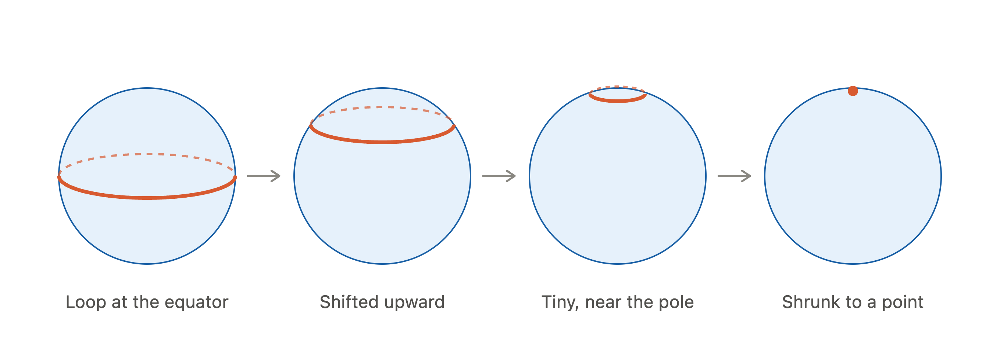
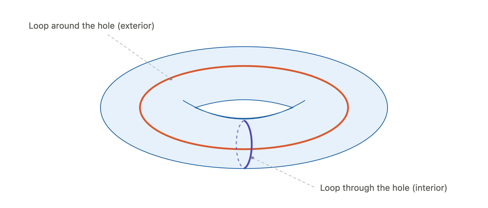

A peculiar interpretation of derivatives
The motivation for this article comes from William Thurston's superb essay On proof and progress in mathematics.
Before further digging into the material, I must reveal what this essay is and what it is not;
It is an informal essay on cohomology and differential forms, the reader is assumed to already have an understanding of the following
subjects; differential geometry, topology and abstract algebra and it does not pretend to add novel contributions to the mathematical community.
- First of all, let me introduce a few concepts:
intro to calculus (df = f'(x)dx ... introduce forms)
Unfortunately in order to understand the main ...
we need to introduce differential forms. These objects can be quite obscure at first, for that reason let me try and give you an intuitive look into differential forms.
Differential forms were introduced to generalise the concept of gradient of a function to arbitrary geometric objects of various dimensions such as curves, surfaces, ..., smooth manifolds of dimension \(n\).
Recall that the gradient is a vector valued operator eating a differentiable function \(f\) and a point \(p\).
It is related to the directional derivative as follows: \(df_p(v) = \frac{\partial f}{\partial v}(p) = \nabla f(p) \cdot v \).
where \(v\) is a tangent vector at \(p\).
So the gradient of the function \(f\) is a vector field that assign to each point \(p\), the directional derivative of \(f\) at \(p\), \(\frac{\partial f}{\partial v} (p)\).
However, if we want to generalise such a notion to less trivial spaces, we are going to have a problem,
namely, that the dot product is not defined in arbitrary vector spaces (such as the tangent space of a smooth manifold).
So what can we do now ?
Let me introduce the twin of vector space: its the dual (vector) space!
Where an element of the dual space is a linear function that sends a vector to a scalar.
Now we can interpret the gradient as a function that assigns to each point of a smooth space an element of the dual of the tangent space that gives you the directional derivative when you give it v as input
And theses functions are exactly what we call differential forms.
So formally,
And these functions from the smooth manifolds to dual element of their tangent spaces are called differential forms
Now, consider arbibtrary coordinates \(x,y,z,...\) that let us describe local regions of the manifold using Euclidean coordinates (this is quite standard in differential geometry).
These are just funcions, that give us a point in the manifold. Therefore, we can take their gradients! We get the differential forms \(dx, dy, dz, ...\).
Finally we can now understand \(df = (df/dx)dx + (df/dy)dy + (df/dz)dz+ ...\)
What does (co)homology mean ?
This is a hared subject.
First of all, homology and cohomology are two sides of the same coin and there exist many kinds of (co)homology, a little bit like there are mutiple currencies. Concretely homology is the study of holes in sufficiently nice topological spaces, it gives us a way to define what a hole is and it allows us to distinguish between different kidns of holes.
example the torus and the sphere. One way of understanding how we can have different kinds of holes and how it might get tricky to give a general definition of a hole, is to look at the following examples; Imagine you have a sphere, a hollow ball if you will. What we can do totest for the abscence of holes on that sphere is to consider a loop on the surface of the sphere (like putting a rubber band arround a ping-pong ball) and move it arround.
If you assume that your rubber band is magic and that it can shrink into becoming a point, then this will happen.
Without lifting the ruber band from the ping-poing ball, by sliding it to one part of the sphere, you can make it shrink to a single point ! (look at the picture)
This exactly means that the sphere does not have a \(1\)-dimensional hole.
Now in place of a sphere, consider a torus (or an inflated swim ring), and attach a rubber band to it. The situation here is a bit different, there is actually two ways in which you can fit a rubber band onto a torus; one is to just put your rubber band onto the "exterior" of the torus and the other one is to imagine that the inflatable swim ring was constructed with a rubber band on its "inside" part. (see picture bellow) And this is a completely different situation than the one we had with the sphere. For the torus, it is impossible to move either rubber bands (without breaking them) in a way, so that they do not get lifted from the surface of the torus and they do not disapear into thin air (like with the sphere). This means that the torus has two \(1\)-dimensional holes.
There is a way to describe this processus formally, the idea is to usechains , cycles and boundaries .
Suppose we have \(X\) a resonnable topological space (our sphere, torus, or whatever smooth space we like).
For what comes next, we need to define what a \(k\)-chains is, we can do this informally.
A \(k\)-chain can be thought of as a pile of \(k\)-dimensional flabby arrows, that you can attach together (now what a \(4\)-dimensional arrow is, I leave your imagination do the work).
PICTURE
Let \(C_i(X)\) be the \(n\)-dimensional vector space whose elements are the \(i\)-chains.
Let \(\partial_i: C_i(X) \rightarrow C_{i-1}(X)\) sending an \(i\)-cell to its boundary.
Formally, we have the following sequence,
$$ \{1\text{-chains}\} \xleftarrow{\partial_1} \{2\text{-chains}\} \xleftarrow{\partial_2} \{3\text{-chains}\} \xleftarrow{\partial_3} ... $$
Let \(Z_i := \text{ker}(\partial_i)\) be the set of cycles (so \(i\)-chains whose endpoints meet) and \(B_i := \text{im}(d_{i+1})\) the set of boundaries.
Notice that an \(i+1\) boundary is also a \(i\)-cycle, so \(\text{im}(d_{i+1})\subset \text{ker}(d_i)\)
Finally we can define what the \(n\)-th homology group of \(X\) written \(H_n(X)\) is.
It is H_n(X) = \frac{Z_n}{B_n}. It is important noting that it is also a vector space and dim \(H_n(X)\) is exactlythe number of \(n\)-dimensional holes. Now cohomolgy on the other hand One of the currencies is the de Rham cohomology.
First of all, homology and cohomology are two sides of the same coin and there exist many kinds of (co)homology, a little bit like there are mutiple currencies. Concretely homology is the study of holes in sufficiently nice topological spaces, it gives us a way to define what a hole is and it allows us to distinguish between different kidns of holes.
example the torus and the sphere. One way of understanding how we can have different kinds of holes and how it might get tricky to give a general definition of a hole, is to look at the following examples; Imagine you have a sphere, a hollow ball if you will. What we can do to

Now in place of a sphere, consider a torus (or an inflated swim ring), and attach a rubber band to it. The situation here is a bit different, there is actually two ways in which you can fit a rubber band onto a torus; one is to just put your rubber band onto the "exterior" of the torus and the other one is to imagine that the inflatable swim ring was constructed with a rubber band on its "inside" part. (see picture bellow) And this is a completely different situation than the one we had with the sphere. For the torus, it is impossible to move either rubber bands (without breaking them) in a way, so that they do not get lifted from the surface of the torus and they do not disapear into thin air (like with the sphere). This means that the torus has two \(1\)-dimensional holes.

There is a way to describe this processus formally, the idea is to use
It is H_n(X) = \frac{Z_n}{B_n}. It is important noting that it is also a vector space and dim \(H_n(X)\) is exactlythe number of \(n\)-dimensional holes. Now cohomolgy on the other hand One of the currencies is the de Rham cohomology.
- Homology: what is a hole and how do we distinguish different kinds of holes
- differential forms and exterior derivatives (on manifolds)
- de Rham cohomology studies differential forms (calculus) to measure holes (locally, because globally it can fail) - closed forms: a form with zero derivative and exact forms: a form that's not the derivation of anything else And exact implies closed but the converse is not necessarily true
Do not forget to add examples, graphics are even better !